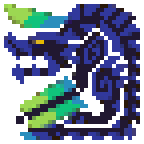

A charm is turned into a talisman in one roll, the same way whether it came from a quest or the Melding Pot. Each of the four charms has its own skill tables and its own slot table.
You trade 3 talismans and Wycademy Points for charms. Every melded charm rolls its second skill on the positive side only, so a melded talisman never has a negative or zero second skill.
For Halcyon and Juju, higher talismans (up to Dragon) make more charms. Three Queen, King or Dragon Talismans make Juju give exactly 2 Enduring Charms every time.
The talismans are rolled the moment you place the order. The wait in quests only counts down; finishing a quest moves every order one step closer.
For Non-MHGU Apps, you can visit the Home Page
An unofficial, non-commercial fan reference for MHGU's talismans. Enter a talisman and it shows the exact chance of getting it from each charm and each Melding Pot style, and how that number is built.
Where the numbers come from: the game's own charm tables and the code that rolls them, read from the game files. The calculation here was checked against the game's own code, run step by step, before it was published. The odds are exact, not estimates from simulated rolls.
Development: Built by the author with substantial help from Claude Code, Anthropic's AI coding tool, reviewed and directed by the author.
Menu textures and font: carried over from the sibling MHGU apps.
Brachydios icon: from the Monster Hunter Wiki on Fandom, by way of Charm Farm, licensed CC BY-SA 3.0.
Monster Hunter content is owned by Capcom. This tool is not affiliated with or endorsed by Capcom.